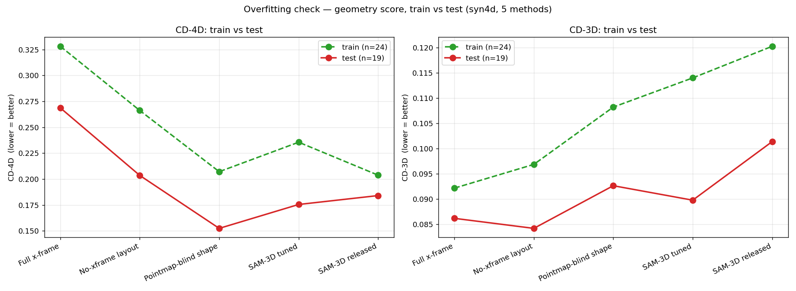

| method | CD-4D train | CD-4D test | Δ | CD-3D train | CD-3D test | Δ | |---|---|---|---|---|---|---| | Full x-frame | 0.3280 | 0.2686 | -0.0594 | 0.0922 | 0.0862 | -0.0060 | | No-xframe layout | 0.2661 | 0.2035 | -0.0626 | 0.0969 | 0.0842 | -0.0127 | | Pointmap-blind shape | 0.2071 | 0.1525 | -0.0547 | 0.1082 | 0.0926 | -0.0156 | | SAM-3D tuned | 0.2356 | 0.1755 | -0.0600 | 0.1140 | 0.0898 | -0.0243 | | SAM-3D released | 0.2038 | 0.1841 | -0.0197 | 0.1203 | 0.1014 | -0.0189 |